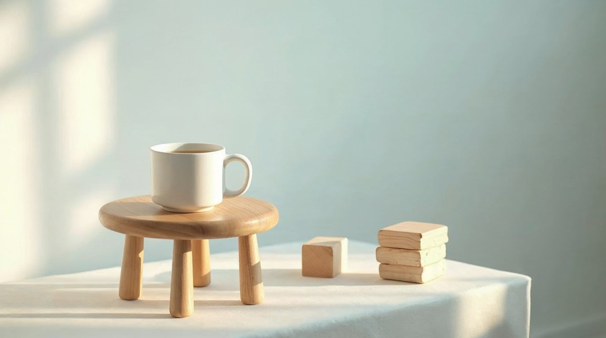
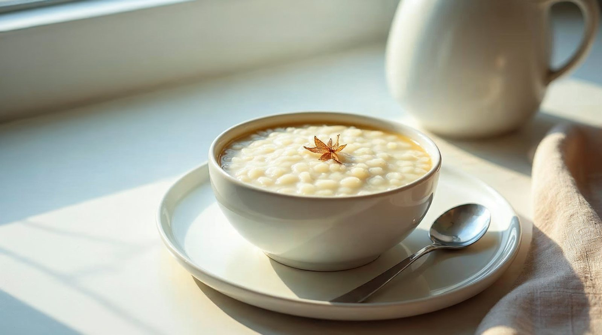

이종호 한의사 감수좋은꿈참사랑한의원 대표원장 (한의사 면허번호 19769)발행 2026-11-26 · 수정 2026-11-26
이 글의 차례
월요일 아침 일곱 시 반, 신발을 신던 아이가 현관에 주저앉습니다. "엄마, 배 아파." 어제 저녁에도, 지난주 월요일에도 들었던 말입니다. 꾀병일까 싶다가도 얼굴을 보면 정말 아파 보이고, 학교에 보내야 할지 말아야 할지 시계만 자꾸 쳐다보게 됩니다.
아이가 배가 아프다고 할 때 보호자께서 해 주실 수 있는 가장 큰 도움은 두 가지를 적어 두는 것입니다. 아이가 손가락으로 배의 어디를 가리키는지, 그리고 등교 전·식사 뒤·잠들기 전 가운데 언제 아프다고 하는지입니다. 이 두 줄만 모여도 무엇부터 살필지 순서가 보입니다.
다만 오른쪽 아랫배가 계속 아파 걷기 힘들어하거나, 초록색 물을 토하거나, 변에 피가 섞여 나오거나, 아이가 축 처져 있다면 기록은 미뤄 두세요. 이때는 한의원 진료를 기다리지 말고 바로 가까운 응급실로 가셔야 합니다.
진료실에서 보호자분들께 이런 말씀을 자주 듣습니다. 병원에서는 별 이상이 없다는데 아이는 계속 아프다고 하니, 믿어 줘야 할지 달래야 할지 모르겠다고요. 학교 가기 싫어서 그러는 것 같아 한 번 다그쳤는데 그게 내내 마음에 걸린다는 분도 계십니다.
아이도 사정이 있습니다. 아픈 건 맞는데 어디가 어떻게 아픈지 말로 다 못 하니, 어른들이 고개를 갸웃하면 더 서럽습니다. 배를 움켜쥔 채 "그냥 아파"라고만 하는 아이 마음도 함께 헤아려 주셨으면 합니다.
아이의 배앓이는 보호자의 아침을 통째로 흔듭니다. 출근 시간은 다가오고, 아이는 웅크리고 있고, 어느 쪽을 택해도 마음이 편치 않지요. 그 아침들을 지나 오신 보호자께 먼저 수고하셨다는 말씀을 드리고 싶습니다.
왜 아이들은 자주 배가 아프다고 할까요
아이들의 배는 몸과 마음이 만나는 자리입니다. 어른은 긴장하면 어깨가 뭉치거나 머리가 아프다고 말하지만, 아이들은 같은 긴장을 배로 느끼고 배가 아프다고 표현하는 경우가 많습니다.
그렇다고 모든 배앓이가 마음 때문은 아닙니다. 아이들에게 가장 흔한 원인 가운데 하나는 변비입니다. 대변을 며칠씩 못 보거나 딱딱한 변을 힘들게 보는 아이는 배꼽 주변이나 왼쪽 아랫배가 묵직하게 아프다고 하곤 합니다.
급하게 먹거나, 찬 음료와 간식을 많이 먹은 날, 늦은 저녁을 먹고 바로 누운 날에도 배가 아프다고 합니다.
학원이 늦게 끝나 밤늦게 저녁을 먹는 아이라면 학원이 늦게 끝나 밤 9시 넘어 저녁을 먹는 아이의 소화와 잠은 어떻게 살피나요?를 함께 보셔도 좋습니다.
한의학에서는 아이의 소화 기운이 아직 여리다고 봅니다. 그래서 먹는 양과 속도, 찬 음식, 잠의 리듬에 쉽게 흔들리고, 긴장하면 배가 먼저 굳는다고 설명하지요. 배를 따뜻하게 하고 끼니의 리듬을 고르게 하는 일을 기본으로 삼는 이유입니다.
위치와 시간으로 나누어 봅니다
아이가 '배'라고 말하는 범위는 생각보다 넓습니다. 그래서 저는 아이에게 손가락 하나로 가장 아픈 곳을 짚어 보라고 합니다. 손바닥 전체로 배를 문지르는지, 손가락 하나로 한 곳을 콕 짚는지도 중요한 단서입니다. 아이가 어려 손가락으로 잘 못 짚는다면, 인형이나 그림의 배에 짚어 보게 하는 방법도 있습니다.
어디가 아픈가요
- 배꼽 주변: 아이들에게 가장 흔한 자리입니다. 변비, 긴장, 급하게 먹은 날에 자주 가리킵니다.
- 명치 쪽 윗배: 식사 뒤 더부룩함, 신물, 아침 공복과 관련 있는지 살핍니다.
- 왼쪽 아랫배: 변이 오래 차 있는 아이에게서 자주 보입니다.
- 오른쪽 아랫배: 배꼽 주변에서 시작해 오른쪽 아래로 옮겨 가며 점점 심해진다면 맹장염 같은 응급 상황을 먼저 생각해야 합니다.
손가락 하나로 한 곳을 콕 짚고, 그 자리를 누르면 아파서 손을 밀어내며, 걷거나 뛸 때 배가 울려 아프다고 한다면 집에서 지켜볼 일이 아닙니다. 기록보다 진료가 먼저입니다.
언제 아픈가요
- 등교 전 아침: 아침 시간이 급하거나, 학교에 긴장되는 일이 있거나, 아침 화장실 시간이 부족한 경우를 함께 봅니다. 주말에는 괜찮은지 꼭 비교해 보세요.
- 식사 뒤: 먹는 속도와 양, 간식, 찬 음식, 특정 음식과의 관계를 살핍니다.
- 잠들기 전이나 밤: 늦은 저녁, 낮의 긴장, 변비를 함께 봅니다. 자다가 아파서 깨는 일이 되풀이된다면 소아청소년과 확인이 필요합니다.
아침에만 아프고 주말과 방학에는 거의 아프지 않다면 학교생활의 긴장을 조심스럽게 살펴볼 만합니다. 시험 기간에 유독 심해지는 중고등학생 이야기는 시험 기간만 되면 배가 아프다는 중고등학생은 어떻게 살피나요?에 정리해 두었습니다.
꾀병일까 싶을 때
보호자께서 가장 어려워하시는 부분이 여기입니다. 학교 가기 싫어서 그러는 건 아닐까, 믿어 주면 버릇이 될까 걱정되시지요. 저는 이렇게 말씀드립니다. 긴장 때문에 생긴 배앓이라도 아이가 느끼는 불편은 진짜라고요.
긴장하면 배의 움직임이 실제로 달라집니다. 배가 꾸르륵거리고, 화장실에 가고 싶고, 속이 메슥거립니다. 아이는 그 이유를 모른 채 그저 '배가 아프다'고만 말할 수 있습니다. 그러니 거짓말인지 가리기보다 무엇이 걱정되는지 들어 주는 편이 좋습니다.
다만 들어 주는 것과 모든 일정을 빼 주는 것은 다릅니다. 응급 신호가 없다면 "잠깐 쉬었다가 같이 가 보자"처럼, 아픈 마음은 받아 주되 하루의 흐름은 이어 가도록 도와주세요.

예를 들면 이런 경우입니다
실제 어느 아이의 이야기가 아니라, 진료실에서 자주 보는 모습을 바탕으로 그려 본 장면입니다.
예를 들어 새 학기가 시작된 뒤 월요일 아침마다 배꼽 주변이 아프다고 하고, 주말에는 멀쩡한 초등학생이 있습니다. 이럴 때는 일요일 밤 잠든 시각, 월요일 아침 식사와 화장실 시간, 그 주 학교 일정을 함께 적어 보시도록 말씀드립니다.
예를 들어 사나흘에 한 번 딱딱한 변을 보며 왼쪽 아랫배를 자주 문지르는 아이도 있습니다. 배앓이보다 대변을 편하게 하는 데서 먼저 시작하고, 물과 채소, 아침 화장실 시간을 함께 챙겨 봅니다.
예를 들어 밥을 급하게 먹고 바로 뛰어놀다가 명치를 잡고 주저앉는 아이도 있습니다. 먹는 속도와 식사 뒤 쉬는 시간을 살피고, 밥을 잘 안 먹는 아이라면 아이가 밥을 몇 숟가락 먹고 안 먹으려 할 때는 무엇을 먼저 살피나요?도 함께 봅니다.
스스로 점검해 보세요
- 한 달에 여러 번, 몇 주째 배가 아프다고 한다
- 주로 등교 전 아침에 아프고, 주말과 방학에는 덜하다
- 대변을 사흘 넘게 못 보거나, 딱딱한 변을 힘들게 본다
- 식사를 급하게 하거나, 찬 음료와 간식을 자주 먹는다
- 저녁을 늦게 먹고 바로 잠드는 날이 많다
- 아파도 곧 다시 놀고, 열이나 구토는 없다
- 요즘 학교나 집에 달라진 일이 있었다
점수를 매기려는 목록은 아닙니다. 표시한 줄을 보여 주시면 그 줄부터 이야기를 시작하겠습니다. 다만 아래 '먼저 확인이 필요한' 신호가 하나라도 있다면 목록보다 진료가 먼저입니다.
먼저 이렇게 여쭙니다
보호자의 기억과 아이의 말을 함께 듣습니다. 아이 앞에서 꺼내기 어려운 이야기는 아이가 잠시 밖에 있을 때 따로 여쭙겠습니다.
- 아이가 손가락으로 가리키는 곳은 배꼽 주변인가요, 윗배인가요, 아랫배의 어느 쪽인가요?
- 등교 전, 식사 뒤, 잠들기 전 가운데 언제 주로 아프다고 하나요? 주말에도 그런가요?
- 아플 때 놀이나 식사를 멈추나요, 금방 괜찮아져 다시 노나요?
- 대변은 며칠에 한 번, 어떤 모양으로 보나요? 볼 때 아파하나요?
- 토하거나 열이 나거나, 몸무게가 줄지는 않았나요?
- 최근 학교, 학원, 친구 관계, 집안에 달라진 일이 있었나요?
아이에게는 쉬운 말로 묻습니다. 콕콕 찌르듯 아픈지, 꾹 누르듯 아픈지, 배가 빵빵한 느낌인지. 아이가 고른 말 한마디가 보호자의 긴 설명보다 많은 것을 알려 줄 때가 있습니다.

일상에서 먼저 해 볼 수 있는 것
응급 신호가 없고 아이가 금방 다시 잘 논다면, 생활의 리듬부터 고르게 해 보세요. 한꺼번에 다 하기보다 하나씩 붙여 가는 편이 오래갑니다.
- 아침에 10분 일찍 깨워 천천히 먹고, 식사 뒤 화장실에 앉아 있을 시간 두기
- 물을 자주 마시게 하고, 채소와 과일을 조금씩 끼니마다 곁들이기
- 찬 음료와 간식은 정해진 때에만, 저녁은 잠들기 2~3시간 전에 마치기
- 아플 때는 따뜻한 손으로 배꼽 주변을 시계 방향으로 천천히 쓸어 주기
- 시험이나 행사 전날에는 아이와 이야기를 나누며 무엇이 걱정되는지 들어 주기
- 아프다고 할 때 다그치지 말고, 잠시 쉬게 한 뒤 다시 해 보자고 말해 주기
아프다고 할 때마다 집에 있는 진통제나 변비약부터 먹이는 것은 조심해 주세요. 약으로 통증이 가려지면 아픈 자리와 모양을 살피기 어려워질 수 있고, 아이 약은 나이와 체중에 맞춰 써야 합니다. 먹였다면 약 이름과 시각을 함께 적어 두세요.
배앓이를 핑계로 학교를 계속 빠지게 되면 다음 날 아침이 더 두려워질 수 있습니다. 응급 신호가 없다면 잠시 쉬고 늦게라도 등교하는 방법을 담임 선생님, 보건 선생님과 함께 의논해 보세요.
아침을 거르고 나서는 큰아이라면 중고등학생 아이가 아침을 거르고 등교할 때는 어떻게 살피나요?도 참고해 주세요.
한의원에서 함께 살필 수 있는 경우
- 병원에서 큰 이상은 없다고 들었지만 배앓이가 되풀이되는 경우
- 등교 전이나 시험 전에만 배가 아프다고 하며 긴장이 큰 아이
- 식사 뒤 자주 배가 아프고, 입이 짧고 쉽게 지치는 아이
- 변비나 묽은 변이 들쭉날쭉하고, 배가 늘 차가운 아이
좋은꿈참사랑한의원에 아이와 처음 오시면 먼저 보호자의 기록과 이야기를 충분히 듣고, 아래 확인이 필요한 신호가 있는지부터 봅니다. 받으신 검사 결과와 드시는 약이 있다면 가져와 주세요.
그다음 아이에게 무엇을 할지 쉬운 말로 설명하고 맥을 짚습니다. 필요하다고 판단되면 혀를 보고, 아이가 괜찮다고 할 때 배를 손으로 살핍니다. 잠과 식사, 대변은 보호자께 함께 여쭙습니다.
이렇게 살핀 내용을 바탕으로 생활에서 먼저 바꿀 것과, 침이나 한약 상담이 필요한지를 보호자와 함께 정합니다. 아이가 무서워하는 방법은 억지로 하지 않습니다. 한약은 아이의 나이와 체중, 드시는 약을 확인한 뒤에 상의하며, 원내 탕전실에서 대표원장이 약재를 검수해 달입니다.
진료 중에 응급 신호나 소아청소년과 확인이 먼저인 신호가 보이면 그 자리에서 말씀드리고 안내합니다. 다시 오시면 지난번 이후 아프다고 한 날과 그 시각, 대변 상태부터 이어서 여쭙습니다.
이렇게 기록해 오시면 상담이 쉬워집니다
배앓이는 진료실에 오는 날에는 괜찮은 경우가 많습니다. 그래서 2주만 짧게 적어 보세요. 휴대폰 메모에 한 줄이면 충분합니다.
- 아이가 손가락 하나로 가리킨 위치(배 그림에 점을 찍어 두셔도 좋습니다)
- 아프다고 한 시각과 얼마나 이어졌는지, 그때 하던 일(등교 준비·식사·숙제)
- 그 전에 먹은 음식과 음료
- 대변을 본 날과 모양(딱딱함·보통·묽음)
- 학교·학원 일정, 시험이나 행사가 있었던 날
- 아플 때 아이의 모습(놀이를 멈췄는지, 표정, 배를 잡은 자세)
보건실에 간 날이 있다면 날짜와 이유를 담임 선생님이나 보건 선생님께 여쭤 함께 적어 주세요. 월요일 아침마다 아프다고 한다면 일요일 밤 잠든 시각과 월요일 아침 식사를 나란히 적어 보세요. 몇 주 모으면 되풀이되는 흐름이 보이는 경우가 많습니다.
이런 증상은 먼저 확인이 필요합니다
- 오른쪽 아랫배가 계속 아프고, 누르면 아파하며 걷거나 뛰기 힘들어하는 경우
- 초록색 물(쓸개즙)을 토하거나, 토하기를 계속 되풀이하는 경우
이런 신호가 있으면 한의원보다 가까운 병원이나 응급실을 먼저 찾으세요.

여쭙는 것
- 아이가 손가락으로 가리키는 곳은 배꼽 주변인가요, 윗배인가요, 아랫배의 어느 쪽인가요?
- 등교 전, 식사 뒤, 잠들기 전 가운데 언제 주로 아프다고 하나요? 주말에도 그런가요?
- 아플 때 놀이나 식사를 멈추나요, 금방 괜찮아져 다시 노나요?
생활에서 해 볼 것
- 아침에 10분 일찍 깨워 천천히 먹고, 식사 뒤 화장실에 앉아 있을 시간 두기
- 물을 자주 마시게 하고, 채소와 과일을 조금씩 끼니마다 곁들이기
- 찬 음료와 간식은 정해진 때에만, 저녁은 잠들기 2~3시간 전에 마치기
한의원에서 함께 살필 것
- 병원에서 큰 이상은 없다고 들었지만 배앓이가 되풀이되는 경우
- 등교 전이나 시험 전에만 배가 아프다고 하며 긴장이 큰 아이
- 식사 뒤 자주 배가 아프고, 입이 짧고 쉽게 지치는 아이
먼저 확인이 필요한 신호
- 오른쪽 아랫배가 계속 아프고, 누르면 아파하며 걷거나 뛰기 힘들어하는 경우
- 초록색 물(쓸개즙)을 토하거나, 토하기를 계속 되풀이하는 경우
한눈에 보는 표
| 구분 | 핵심 |
|---|---|
| 여쭙는 것 | 아이가 손가락으로 가리키는 곳은 배꼽 주변인가요, 윗배인가요, 아랫배의 어느 쪽인가요? 등교 전, 식사 뒤, 잠들기 전 가운데 언제 주로 아프다고 하나요? 주말에도 그런가요? |
| 생활에서 해 볼 것 | 아침에 10분 일찍 깨워 천천히 먹고, 식사 뒤 화장실에 앉아 있을 시간 두기 물을 자주 마시게 하고, 채소와 과일을 조금씩 끼니마다 곁들이기 |
| 한의원에서 함께 살필 것 | 병원에서 큰 이상은 없다고 들었지만 배앓이가 되풀이되는 경우 등교 전이나 시험 전에만 배가 아프다고 하며 긴장이 큰 아이 |
| 먼저 확인이 필요한 신호 | 오른쪽 아랫배가 계속 아프고, 누르면 아파하며 걷거나 뛰기 힘들어하는 경우 초록색 물(쓸개즙)을 토하거나, 토하기를 계속 되풀이하는 경우 |
자주 묻는 질문
아이가 말을 잘 못하면 어떻게 적나요?
아이가 배를 잡는 자세와 표정, 놀이를 멈췄는지, 다리를 배 쪽으로 웅크리는지를 있는 그대로 적어 오시면 됩니다. 짧은 영상이나 배 그림에 찍은 점도 도움이 됩니다.
꾀병인지 진짜 아픈 건지 어떻게 구분하나요?
아이가 배로 느끼는 불편은 긴장 때문이라도 진짜 불편입니다. 응급 신호가 없는지 먼저 확인하고, 주말과 평일, 시간대별로 기록을 모아 보시면 흐름이 보입니다. 다그치기보다 무엇이 걱정되는지 들어 주세요.
학교 보건실 기록도 도움이 되나요?
네. 보건실에 간 날짜와 이유를 알려 주시면 학교생활과 배앓이의 흐름을 이해하는 데 도움이 됩니다.
주말에도 아이와 함께 진료를 받을 수 있나요?
좋은꿈참사랑한의원은 토·일·공휴일에도 09:30~15:00(점심시간 없음)에 진료합니다. 평일은 09:30~20:00(점심 13:00~14:00)입니다. 응급 신호가 있다면 진료 시간과 상관없이 가까운 응급실로 가세요.
좋은꿈참사랑한의원은 재진 때 지난번 이야기부터 이어서 여쭙니다. 진료시간과 예약은 오시는 길에서 확인하세요.
어디서 상담받을 수 있나요?
좋은꿈참사랑한의원은 서울 동작구 만양로2길 2 신성빌딩 3층·5층(서울 동작구 상도동, 7호선 상도역 3번 출구 근처)에 있습니다. 한의사 3명(이종호 대표원장, 조영기 수석진료원장, 정원영 진료원장)이 진료합니다. 진료시간은 평일 09:30~20:00(점심 13:00~14:00), 토·일·공휴일 09:30~15:00이며, 방문 전 전화로 확인을 권합니다. 예약은 네이버 예약, 카카오톡 상담, 전화 02-815-7510로 받습니다.
이 글은 일반적인 건강 정보이며 개인의 진단이나 치료를 대신하지 않습니다. 증상이 있거나 복용 중인 약이 있다면 진료를 통해 확인하세요. 치료 효과는 개인마다 다를 수 있습니다.
작성 기준: 일반적으로 알려져 있는 건강 정보를 참고해 정리했습니다(대표원장 감수). 증상 기록은 1~2주 동안 하루 1회, 비슷한 시간에 적어 오시면 지난 상태와 비교하기 쉽습니다.